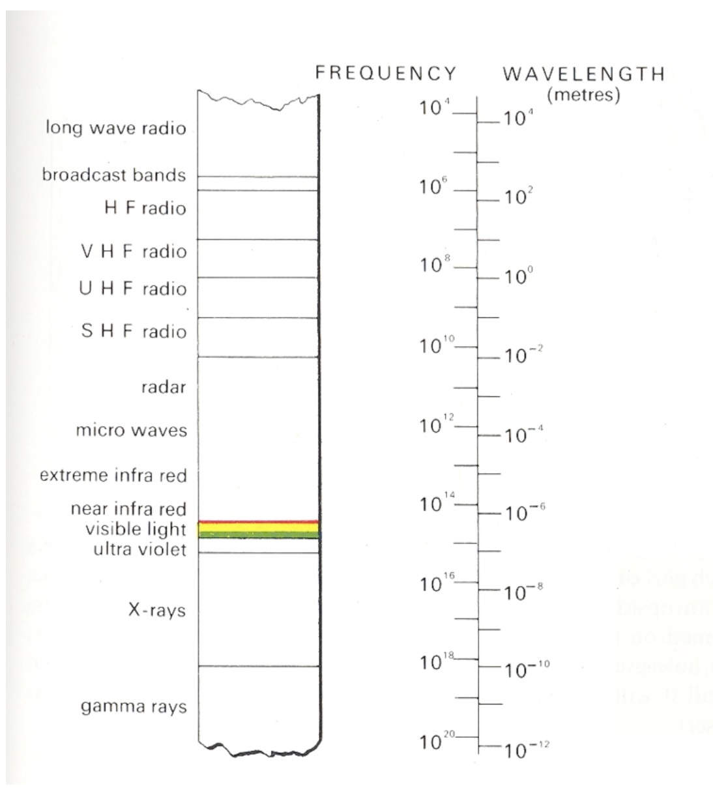

Color Theory and D3 Scales
CS-GY 6313 - Fall 2025
NYU Tandon School of Engineering
2025-10-03
Color Theory and D3 Scales
Color Theory
- Physics and physiology of color
- Color spaces and models
- Color scales for data
- Accessibility considerations
D3 Scales Deep Dive
- Linear and ordinal scales
- Color scales in D3
- Time scales
- Advanced scale techniques
Color in Nature

Vasas et al, PLOS Biology, 2024
Image from PLOS Biology
The Visible Spectrum
Humans perceive wavelengths from approximately 390-700nm
Properties of Light
Visible range: 390-700nm
Luminance has huge dynamic range:
- 0.00003 — Moonless overcast night sky
- 30 — Sky on overcast day
- 3,000 — Sky on clear day
- 16,000 — Snowy ground in full sunlight
Colors result from spectral curves:
- Dominant wavelength → Hue
- Brightness → Lightness
- Purity → Saturation
Physiology of the Eye

Light passes through cornea, pupil, lens, and reaches the retina
The Retina Structure
Multiple layers of cells process visual information before sending to brain
Photoreceptors: Rods and Cones
Rods
- Active at low light levels (scotopic vision)
- Only one wavelength-sensitivity function
- ~120 million in human eye
Cones
- Active at normal light levels (photopic vision)
- Three types with different peak sensitivities
- ~6 million in human eye
- Concentrated in fovea
Cone Sensitivity Curves

Three types of cones: S (short/blue), M (medium/green), L (long/red)
Image from WR Franklin
Density of Cones Across Retina

Highest density in fovea (center of vision)
Rods vs. Cones Sensitivity

Rods more sensitive in low light; cones provide color vision
How We Perceive Color

Color perception results from brain’s interpretation of cone responses
Color Matching Experiments

Foundation of color theory: any color can be matched with three primaries
Color Models for Visualization
Trichromacy
Humans perceive colors through three channels
Most useful color description for visualization:
- Hue: What color (red, blue, green…)
- Saturation: Purity of color
- Luminance/Lightness: Brightness
Material from Enrico Bertini
How Do We Use Color in Visualization?
Two primary purposes:
1. Quantify
Show numerical values
2. Label
Distinguish categories
Material from Enrico Bertini
Color to Quantify

Mapping numerical values to color intensity or hue
Material from Enrico Bertini
Color to Label

Using distinct colors to represent different categories
Material from Enrico Bertini
Quantitative Color Scales
Desired Properties:
- Uniformity: Value difference = Perceived difference
- Discriminability: As many distinct values as possible
Challenge:
Human perception is non-linear!
Material from Enrico Bertini
Single Hue Sequential Scales
Best for quantitative data with natural ordering
- Choose one hue
- Map value to luminance
- Light → Dark or Dark → Light

Material from Enrico Bertini
Categorical Color Scales
For nominal/categorical data without inherent order

Design Goals:
- Uniform saliency: Nothing stands out unintentionally
- Maximum discriminability: Each category clearly distinct
Material from Enrico Bertini
Categorical Scale Limits
How many distinct colors can we use effectively?
Research suggests: 5-10 distinct categories maximum
Beyond this limit: - Colors become confusable - Need additional encoding (shape, pattern) - Consider grouping categories
Reference: Healey, “Choosing effective colours for data visualization” IEEE Vis 1996
Material from Enrico Bertini
Diverging Color Scales
For data with meaningful midpoint (zero, average, neutral)
 Sequential scale obscures the critical 50% threshold
Sequential scale obscures the critical 50% threshold
 Diverging scale clearly shows above/below threshold
Diverging scale clearly shows above/below threshold
Data from County Level Election Results
Color Blindness Considerations
~10% of males and ~1% of females have color vision deficiencies

Oliveira, “Towards More Accessible Visualizations for Color-Vision-Deficient Individuals” 2013
Color Spaces
RGB (Red, Green, Blue)
- Device-oriented
- Not perceptually uniform
- Common in programming
HSL/HSV (Hue, Saturation, Lightness/Value)
- More intuitive for humans
- Better for color selection
- Still not perceptually uniform
LAB/LCH
- Perceptually uniform
- Better for interpolation
- Used in professional design
Perceptual Color Spaces
Why Perceptual Uniformity Matters
In RGB space, equal numerical steps ≠ equal perceptual steps
D3 Color Scales
Sequential Scales
// Single hue
const blueScale = d3.scaleSequential()
.domain([0, 100])
.interpolator(d3.interpolateBlues);
// Multi-hue
const viridisScale = d3.scaleSequential()
.domain([0, 100])
.interpolator(d3.interpolateViridis);Built-in Color Schemes:
- Blues, Greens, Reds, Purples, Oranges, Greys
- Viridis, Inferno, Magma, Plasma (perceptually uniform)
D3 Diverging Scales
// Diverging scale with custom midpoint
const divergingScale = d3.scaleDiverging()
.domain([−50, 0, 100]) // min, midpoint, max
.interpolator(d3.interpolateRdBu);
// Common diverging schemes:
// RdBu (red-blue), RdYlGn (red-yellow-green),
// BrBG (brown-green), PuOr (purple-orange)Perfect for: - Temperature anomalies - Election results - Profit/loss - Any data with meaningful zero
D3 Categorical Scales
// Ordinal scale with color scheme
const categoryScale = d3.scaleOrdinal()
.domain(["A", "B", "C", "D"])
.range(d3.schemeCategory10);
// Available categorical schemes:
// schemeCategory10 - 10 distinct colors
// schemeSet1 - 9 colors (colorblind safe)
// schemeSet2 - 8 colors (print friendly)
// schemeSet3 - 12 colors (pastel)
// schemePaired - 12 colors (paired)Color Scale Best Practices
Sequential Data
✅ Use single or multi-hue sequential ❌ Don’t use rainbow scales
Categorical Data
✅ Use distinct hues with similar saturation/lightness ❌ Don’t use more than ~8 categories
Diverging Data
✅ Use when there’s a meaningful midpoint ❌ Don’t use for purely positive data
Accessibility
✅ Test with colorblind simulators ✅ Provide redundant encoding when possible
Advanced D3 Scales
Time Scales
const timeScale = d3.scaleTime()
.domain([new Date(2020, 0, 1), new Date(2025, 0, 1)])
.range([0, width]);Log Scales
Power Scales
Quantized Scales
Transform continuous domains into discrete ranges
// Quantize scale - equal intervals
const quantizeScale = d3.scaleQuantize()
.domain([0, 100])
.range(["low", "medium", "high"]);
// Quantile scale - equal quantities
const quantileScale = d3.scaleQuantile()
.domain(data)
.range(["Q1", "Q2", "Q3", "Q4"]);
// Threshold scale - custom breakpoints
const thresholdScale = d3.scaleThreshold()
.domain([30, 70])
.range(["cold", "comfortable", "hot"]);Color Interpolation
D3 provides multiple interpolation methods:
// RGB interpolation (can be muddy)
d3.interpolateRgb("red", "blue")(0.5);
// HSL interpolation (follows hue wheel)
d3.interpolateHsl("red", "blue")(0.5);
// LAB interpolation (perceptually uniform)
d3.interpolateLab("red", "blue")(0.5);
// HCL interpolation (best for many cases)
d3.interpolateHcl("red", "blue")(0.5);
// Cubehelix (rainbow with uniform luminance)
d3.interpolateCubehelix("red", "blue")(0.5);Creating Custom Color Scales
// Custom sequential scale
const customSequential = d3.scaleSequential()
.domain([0, 100])
.interpolator(t => d3.interpolateHcl("#e8f4f8", "#004c6d")(t));
// Custom diverging scale
const customDiverging = d3.scaleDiverging()
.domain([−1, 0, 1])
.interpolator(t => t < 0.5
? d3.interpolateHcl("#67001f", "#f7f7f7")(t * 2)
: d3.interpolateHcl("#f7f7f7", "#053061")((t - 0.5) * 2));
// Piecewise scale
const piecewise = d3.scaleLi ## Practical Color Guidelines
### For Print
- Consider grayscale reproduction
- Use ColorBrewer schemes
- Test on actual printer
### For Screen
- Consider monitor variations
- Use sufficient contrast
- Test on different devices
### For Accessibility
- Use colorblind-safe palettes
- Provide alternative encodings
- Test with simulators
## Color Tools and Resources
### Online Tools:
- [ColorBrewer](https://colorbrewer2.org) - Color schemes for maps
- [Accessible Colors](https://accessible-colors.com) - WCAG compliance
- [Coblis](https://www.color-blindness.com/coblis-color-blindness-simulator/) - Colorblind simulator
### D3 Resources:
- [D3 Scale Chromatic](https://github.com/d3/d3-scale-chromatic) - All color schemes
- [Observable Color Notebooks](https://observablehq.com/@d3/color-schemes) - Interactive examples
### Research:
- [ColorBrewer Paper](http://colorbrewer2.org/learnmore/schemes_full.html) - Harrower & Brewer
- [Viridis Explanation](https://www.youtube.com/watch?v=xAoljeRJ3lU) - Why we need better colormaps
## Common Color Mistakes
### 1. Rainbow Color Maps
- Non-uniform perceptually
- Create false boundaries
- Poor for colorblind users
### 2. Too Many Categories
- Beyond 7-8, colors become confusable
- Consider grouping or filtering
### 3. Ignoring Context
- Red/green for good/bad in finance
- Cultural color associations vary
### 4. Poor Contrast
- Insufficient luminance difference
- Fails accessibility standards
## Lab Preview: Color and Scales in D3
### Today's Lab Activities:
1. Implement different scale types (linear, log, time)
2. Create color scales for different data types
3. Build a choropleth map with sequential colors
4. Design accessible categorical palettes
5. Test colorblind safety
### Key Concepts to Practice:
- Scale domains and ranges
- Color interpolation methods
- Legends for color scales
- Interactive scale adjustments
## Putting It All Together
### Example: Temperature Visualization
```javascript
// Temperature data with anomalies
const tempScale = d3.scaleDiverging()
.domain([−10, 0, 10]) // Anomaly in degrees
.interpolator(d3.interpolateRdBu)
.clamp(true); // Prevent extrapolation
// Apply to data
svg.selectAll("rect")
.data(temperatureData)
.enter().append("rect")
.attr("fill", d => tempScale(d.anomaly))
.attr("opacity", 0.8); // Slight transparency
// Add legend
const legend = d3.legendColor()
.scale(tempScale)
.title("Temperature Anomaly (°C)");Summary
Color Theory:
- Human vision: trichromatic with non-uniform perception
- Three main uses: sequential, categorical, diverging
- Accessibility crucial: ~10% have color vision deficiency
D3 Scales:
- Transform data space to visual space
- Rich variety: linear, log, time, ordinal, sequential
- Color scales with perceptual considerations
Best Practices:
- Limit categorical colors to 5-8
- Use perceptually uniform scales
- Always consider colorblindness
- Test in context
Next Week: Deceptive Visualizations
Topics:
- Types of visual deception
- Intentional vs. unintentional misleading
- Cognitive biases in interpretation
- Ethical responsibilities
- Case studies from media
Pre-reading:
- Tufte Chapter 2: “Graphical Integrity”
- “Truncating the Y-Axis: Threat or Menace?”
Reading for Next Week
Required:
- Which color scale to use - Lisa Charlotte Rost
- Modeling Color Difference - Danielle Szafir 2017
- D3 Scale Chromatic - Observable notebook
Optional:
- Somewhere Over the Rainbow - Liu & Heer 2018
- Color Use Guidelines - Cynthia Brewer 1994